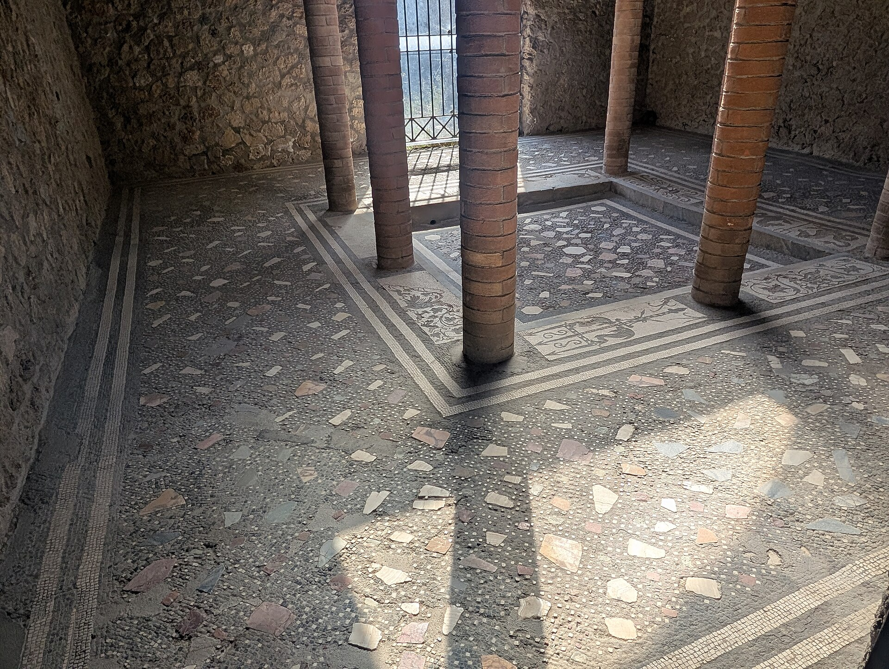
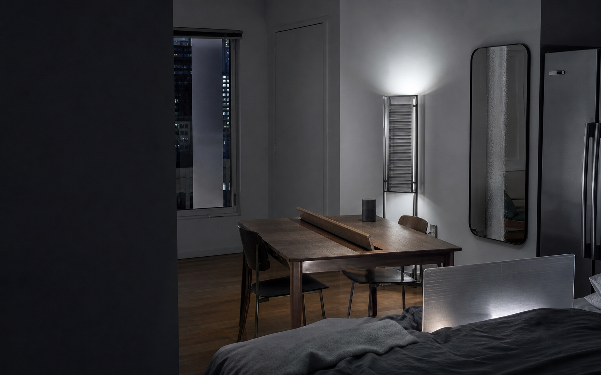
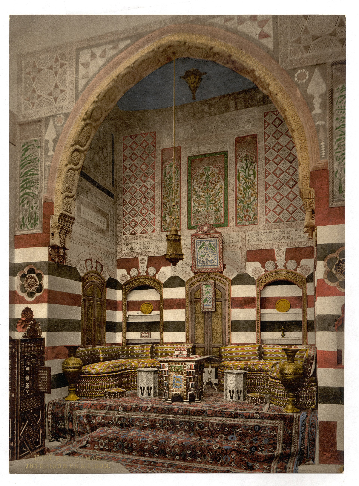
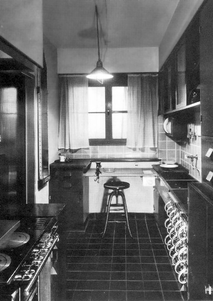
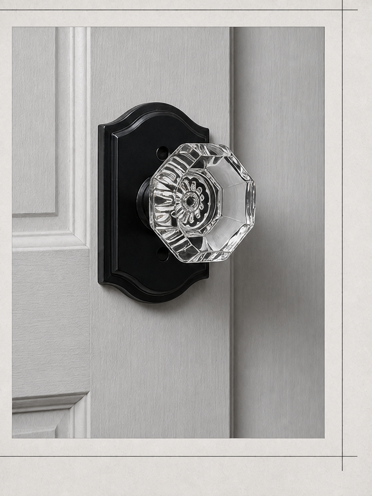
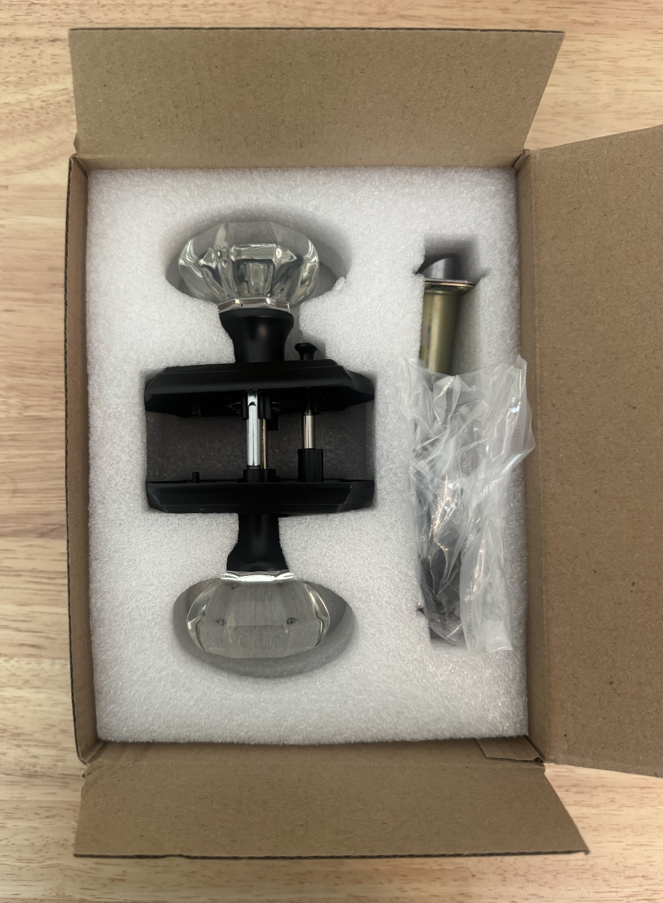
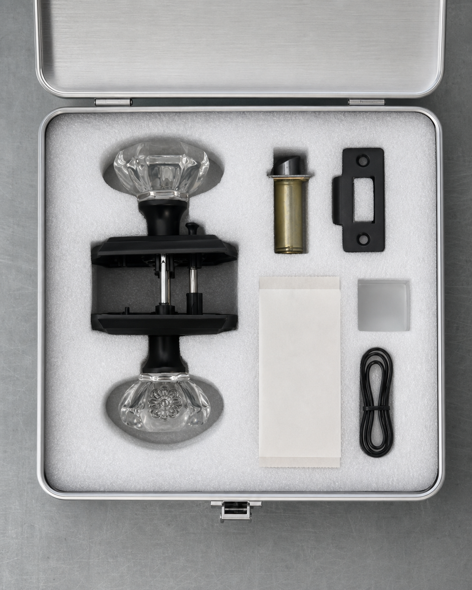
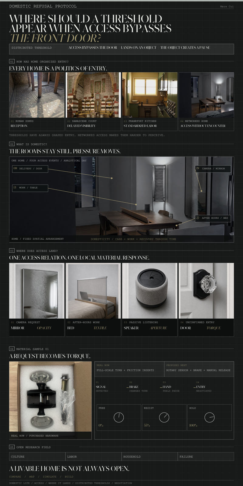

Roman domus / schematic sequence
CLIENTS RECEIVED / STATUS DISPLAYED

A field manual for distributed thresholds
Research question
A distributed threshold forms where access lands: one object, one boundary, one local response.
What is a home?



What is domestic?
Object studies / distributed thresholds
01 / Mirror
NOT SMART FURNITURE. LOCAL MATERIAL THRESHOLDS.
Material response lab

CHOOSE THE OBJECT'S RESPONSEThe brake slows the turn while entry is unconfirmed.
Input 52 degrees / handle 29 degrees / resistance 55 percent.


Material-spatial gesture

EXISTING GLASS KNOB + PROPOSED SENSOR / BRAKE · MANUAL RELEASE REQUIRED
Open research field
Domestic Refusal Protocol